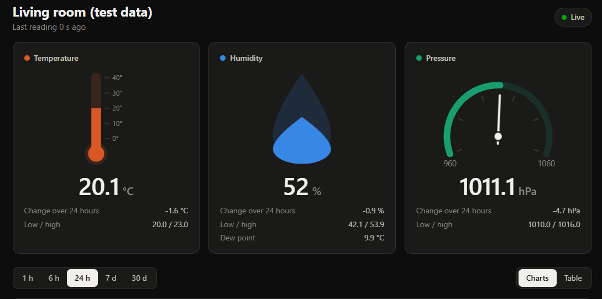
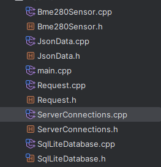
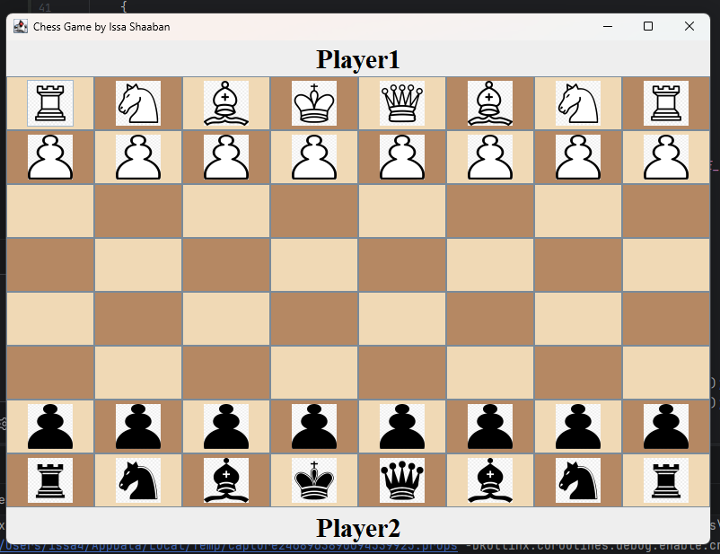

Wyst
It starts with a shared interest. Wyst makes it easier to meet people through shared interests, events and experiences.
What it is
Wyst is a social app for meeting people nearby. Rather than starting from a profile, it starts from what you like doing: you pick your interests, find small groups built around them, and turn up to local events with people who already have something in common with you.
The app is live on the App Store and Google Play, and is launching in Manchester first.
How it works
-
Pick your interests
Board games, cycling, photography. Your interests become the filters for everything you see.
-
Join small groups
Each group has its own chat, so you can get to know people before meeting them.
-
Go to events
Upcoming events sit alongside your groups, so plans turn into actually meeting up.
My role
- Founder: I founded Wyst, lead the six-person team behind it and have managed the project from the first idea through to release on both app stores.
- Backend architecture: I designed a scalable backend with Spring Boot, MySQL and Redis, following an MVC structure.
- Delivery: We work in Agile/Scrum, and I turn business goals into technical user stories the team can build against.
Tech stack
Mobile app
Backend
Data
Infrastructure & tooling
Find out more
See the app at wystapp.org, or follow @wystapp on Instagram.
Smart Home System
A web interface that shows live readings from sensors attached to a Raspberry Pi.

The dashboard
A high-performance web interface that visualises live telemetry from a Raspberry Pi. Temperature, humidity and atmospheric pressure update in real time over a WebSocket pipeline, which keeps latency between the hardware sensors and the browser under a second.

The backend
main.cpp sets up three things: the ServerConnection, which uses the libwebsockets library to talk to the frontend; the Bme280Sensor, which reads from the GPIO pins on the Raspberry Pi; and a SQLite database.
The Request class follows a typical request design. It holds an id, the time of the request, a source and destination, and a request type (get, post, getAll or close). Each request arrives from the frontend as JSON and is converted into this class.
Future additions
- Specific buttons for get, post, getAll and close connection
- Extra sensors in different rooms
- A centralised database on its own Raspberry Pi
- A UI that displays several areas at once
- Periodic reads from the sensors, and periodic writes to the database
Chess Game
A chess game written in Java with a Swing interface.
Background
I started this project in September 2024 to improve and solidify my Java skills. I got quite a lot done at the time, and I have recently decided to rework parts of the game whenever I get some free time.
My Java has come a long way since then, and I hope to show that through future commits to this game.
Planned features
- Highlighting the playable squares for each piece
- Settings to change the board background
- En passant and castling
- A choice of piece when a pawn reaches the end of the board
